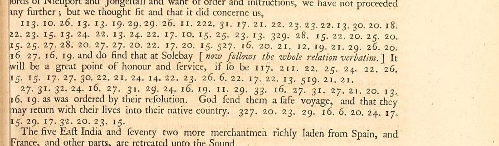

At a glanceNot solved · 0 of 136 groups
- The letter
- Hieronymus van Beverningh and Vande Perre, envoys of the States General negotiating with the Commonwealth, to Willem Boreel, Dutch ambassador in Paris. Westminster, 22 August / 1 September 1653. Intercepted by Thurloe’s office.
- Where
- The original is in the Bodleian, MS Rawlinson A (Thurloe papers) vol. v p. 240, not digitised. Printed by Thomas Birch, A Collection of the State Papers of John Thurloe (1742), vol. 1 p. 435, the only witness online. Satoshi Tomokiyo (Cryptiana) lists it with no known decipherment.
- The cipher
- 136 groups in three passages: figures 6–33 standing for letters (25 symbols), and eight three-figure groups (113, 117, 211, 222, 327, 329, 519, 527) for words, from a new code Boreel had sent.
- How it was tried
- Every royalist and Commonwealth key of 1653–60 on Cryptiana; a hill-climb with Dutch and French language models, one-to-one and homophonic; an alphabetical key with any shift. Then a matched control on synthetic texts of the same layout.
- Still open
- All of it. The control shows the text is long enough for the solver, so the letters are not a plain or lightly homophonic cipher of Dutch or French as modelled, or Birch’s print is corrupt.
01 The letter
In August 1653 the States General’s envoys in London were negotiating an end to the First Anglo-Dutch War. Their despatch to Boreel in Paris was intercepted, copied and kept in John Thurloe’s papers, and Thomas Birch printed it in 1742 in English translation, with the cipher passages as they stood. They warn Boreel that letters addressed in English are opened, as the English assume they concern royalists, and then: “We are served with the same cypher; but hereafter to express particular words, we will rather make use of the new one, which your excellency was pleased to send unto us”. So the small figures are the old letter cipher and the three-figure groups the new word code.

This despatch was one of four short pieces with no known decipherment in Birch’s volumes that Cryptiana lists together as one item. They share only the printed source, and each is in its own cipher, so each has its own page: du Gard to White, 10 June 1656, Brussels to Copinger, 12 August 1656 and Waddall to “Vanyeare”, 22 August 1656.
02 The cipher
The three passages hold 136 groups, 128 of them figures 6–33 (25 distinct) and eight three-figure code groups, one per word, that break the letter runs into pieces (66, 47 and 15 letters). The low figures are a letter cipher in the plain reading: about one symbol per letter, a few to spare for homophones. The plaintext is taken to be Dutch or French; Birch’s English is his translation of the original.
03 What was tried
- Known keys. Every 1653–60 royalist and Commonwealth key that Cryptiana publishes was applied (Marshall 1656–58, Barwick–Hyde 1659–60, Stamford 1655, Butler 1656, the Charles II key intercepted in 1655, Kingston 1658, Westrope 1655, the Hague agent and Blake) and scored with English, Dutch and French quadgram models. The best scores were −4.8 to −5.4 per quadgram, against about −3.2 for real text: nothing readable.
- Hill-climbing. A solver on the 128 letter figures with Dutch and French quadgram models, one-to-one and homophonic, eight restarts. Its best was −4.71 per quadgram (random text about −6, real Dutch −3.0 to −3.4), with fragments such as “ormellenhebelandender” that look Dutch but do not read.
- An alphabetical key. A plain alphabet laid on 10–33, with any shift or reversal, was excluded.
04 The matched control
Was the text simply too short? Synthetic ciphertexts were made in exactly this letter’s layout (66 + 47 + 15 letters, eight code groups skipped), from held-out Dutch, French and period English, and given to the same solver unchanged, 40 trials each. It read 39 of 40 Dutch, 40 of 40 French and 36 of 40 English one-to-one substitutions to 80% or better, and 26, 24 and 17 of 40 homophonic ones with 25 symbols, as here. This letter’s own best score lies below every Dutch and every French homophonic control. So a Dutch or French letter cipher of this shape, with up to two symbols per letter, would very probably have been deciphered. One of the assumptions is wrong: the figures include syllables, word signs, nulls or more homophones, or the language differs, or Birch’s transcription is corrupt.
05 What remains
- The three passages (136 groups): not read. Blocker: no key material. The key, or another despatch of the envoys to Boreel with its decipherment, would be in the Nationaal Archief (Staten-Generaal, liassen Engeland), not online; the eight code groups need the new code Boreel sent.
- The original in the Rawlinson manuscripts would settle whether Birch’s figures are right. It is not digitised.
06 Sources
- Bodleian Library, MS Rawlinson A (Thurloe papers) vol. v p. 240.
- T. Birch (ed.), A Collection of the State Papers of John Thurloe (London 1742), vol. 1 p. 435: British History Online; page image in the Internet Archive scan.
- S. Tomokiyo, Cryptiana, Thurloe and Dutch ciphers (the keys tried).
Ciphertext, scripts (key trials, solvers, control) and notes: targets/thurloe/.